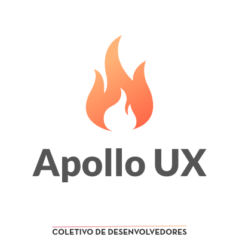
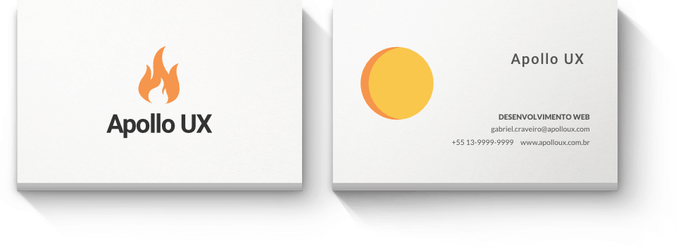

Apollo UX
Uma agência criada em Santos por colegas desenvolvedores - 2017
O projeto
Em um mundo cada vez mais digital, ter sua marca na internet é sinonimo de inovação. Então resolvemos criar soluções para marcas na web. Juntamos algumas ideias, fizemos um projeto de agência entre colegas que possuiam especializações diferentes e daí criamos a Apollo.
O problema
A maioria dos integrantes era novo na área mas possuia vontade de fazer algo fora da faculdade que pudesse acrescentar nas nossas experiências. Apesar de ja termos feito projetos separados, organizar, projetar, definir metas era algo novo para os integrantes da equipe. Saber dividir as tarefas se tornou o principal ponto no começo do projeto e com o tempo isso foi se tornando mais tranquilo.
Solução
Criar primeiro um site que mostrasse a nossa experiência, juntar os melhores pontos de cada integrante e começar a procurar clientes para construirmos um portfólio. Foi então criada toda a marca da Apollo e hoje ja contamos com alguns clientes fixos.
Minhas funções
Realizei a criação do logo, identidade e cartão. O mockup do site fiz junto com Fernando Moreira e teve como inspiração o deus grego Apollo, patrono da arte, música e do fogo. Também auxiliei no desenvolvimento do site, realizando a criação da área de Quem somos e do Portfolio, usando bootstrap 4, js e sass. Hoje realizo o serviço de freelance na criação de sites e blogs, principalmente em wordpress e na realização de SEO básico.
Logo

Cartão

Versão Desktop